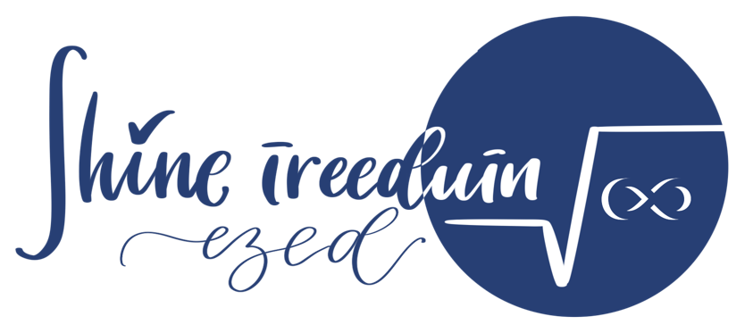

Бүгд одоогийн hero-гийн мэдээллийг (цэс, гарчиг, тайлбар, товч, тууз) хадгалж, өөр өөр гол санаатай. Эхлээд утсаар нээж үзээрэй.
Сэдвүүд суурийнхаа дарааллаар нэг шугамд холбогдож, сурагч хаана байгаа, сул сэдэв аль нь, дараа юуг бодохыг газрын зураг шиг харуулна.
Цайвар цэнхэр, хар хөх. Зам хөдөлгөөнтэй зурагдана.Нисэх буудлын эргэдэг үсэгтэй самбар шиг жишиг ЭЕШ-ийн ID-аар эрэмбэ болон сэдэв тус бүрийн сул талыг үсэг бүрээр нь эргүүлж гаргана.
Бараан далайн ногоон, шар. Өгөгдлийн мэдрэмж.Дөрвөлжин дэвтэр дээр сурагч бодлого бодож, багш «Зөв. Яагаад?» гэж улаанаар асууж, сурагч графикаар тайлбарлана: зарчмыг үйл явдлаар нь харуулна.
Цаас, хөх бал, улаан бал. Гар бичмэл хөдөлгөөн.Куб, конус, бөмбөрцгийг хавтгайгаар огтолж «өөрөөр харна»: конусаас тойрог, эллипс, парабол, гипербол, кубаас гурвалжин, зургаан өнцөгт гарна.
Нарны шар, хар хөх. Чирж, гулсуулж тоглох интерактив.